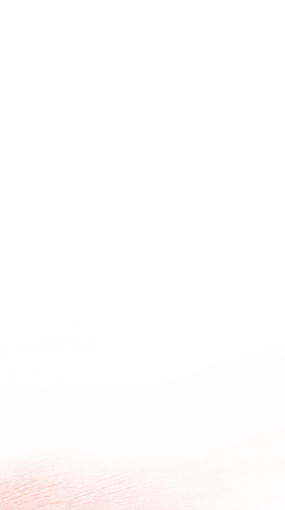
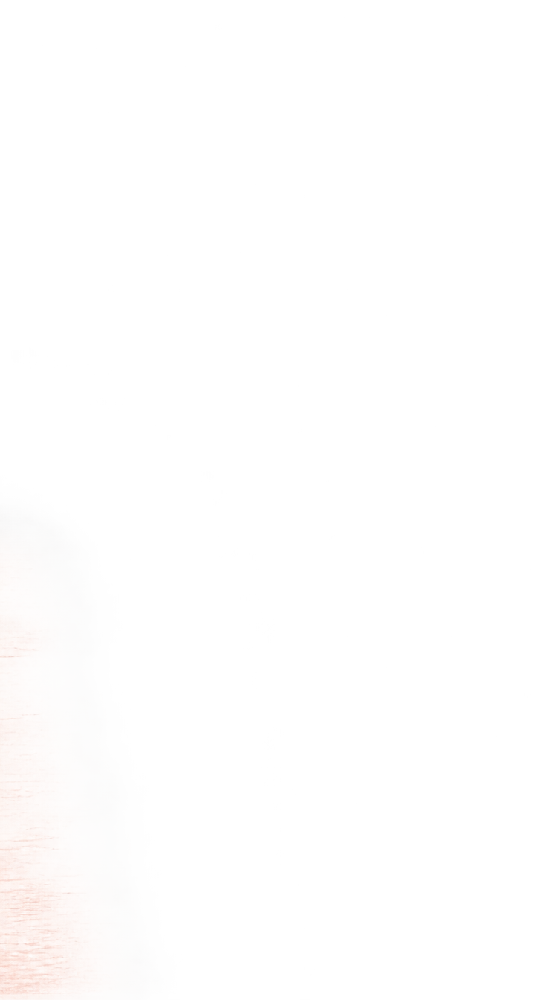
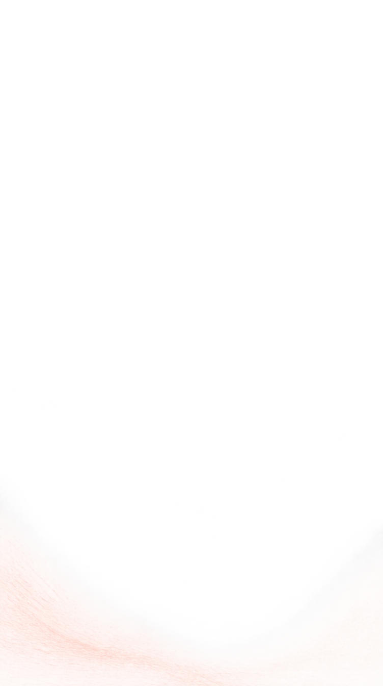

A · 아래에서 스며드는 첫 장추천
아래쪽에 넓게 스며들고, 위로 갈수록 결이 성기게 사라집니다.


같은 먹색 로고 · 같은 중앙 배치 · 연한 피치·코랄
획의 방향과 범위를 비교하는 디자인 시안입니다.
아래쪽에 넓게 스며들고, 위로 갈수록 결이 성기게 사라집니다.

왼쪽 여백을 따라 짧은 획이 쌓입니다. 흰 공간이 가장 넓습니다.

아래 양쪽에서 시작한 두 흐름이 가운데에서 느슨하게 겹칩니다.
